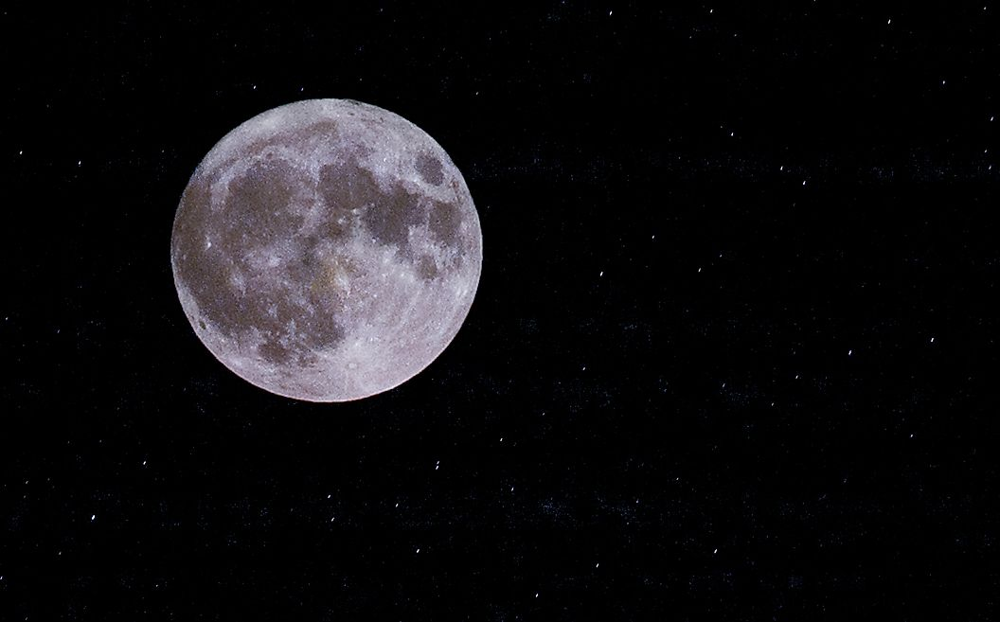
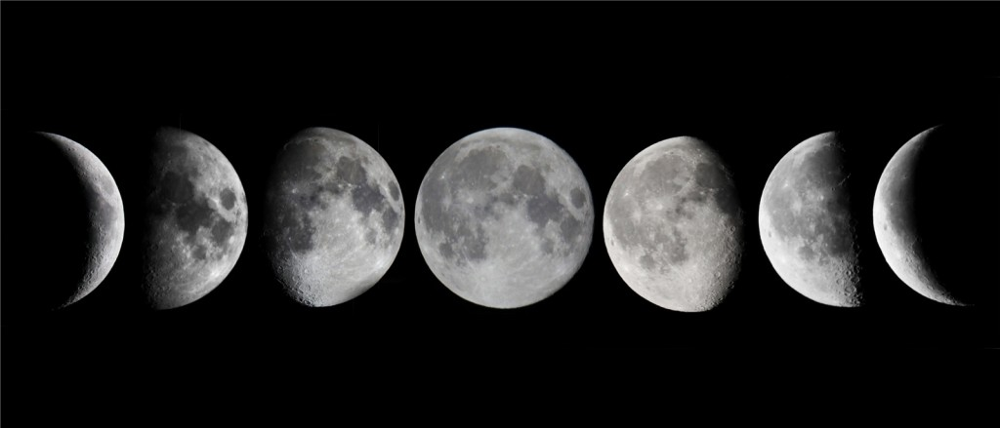

The Moon softly lights up the night sky and shares a quiet bond with nature and humans. Its gentle pull moves the ocean tides, helping life on Earth stay balanced. For centuries, people have looked at the Moon for peace, beauty, and inspiration, feeling connected to the calm rhythm of nature.

The Moon is not visible because sunlight falls on the opposite side.
Only half of the Moon is visible from Earth.
The entire Moon is bright and fully visible in the night sky.